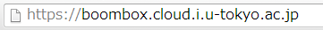
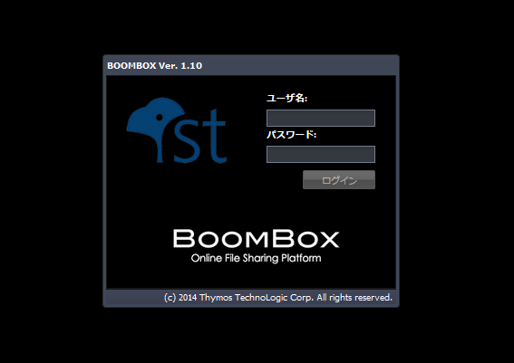

SecretFilesマニュアル
2. ログイン
SECRET FILES Webアプリケーションは、ブラウザ上で実行されます。したがってそのサービスの利用や途中の作業方法は基本的にブラウザを操作する時と同じです。
では、まずサービスにログインしてみることにしましょう。
ブラウザを起動して、URLを以下のように入力して下さい。


画面の中央にログインウィンドウが表示されています。
なお、このマニュアルではマウスのクリックについて、左クリックないし右クリックと表示しますが、マウスの設定によっては、右左が逆になる場合がありますので、適宜ご自身の環境に合わせて読み替えて下さい。
右左の記載をしていない場合には、左クリックした場合をさします。